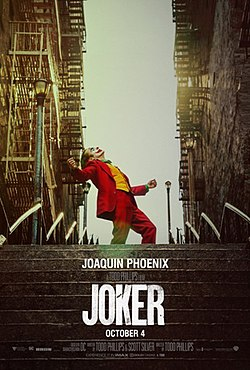

Isolado, intimidado e desconsiderado pela sociedade, o fracassado comediante Arthur Fleck inicia seu caminho como uma mente criminosa após assassinar três homens em pleno metrô.
Sua ação inicia um movimento popular contra a elite de Gotham City, da qual Thomas Wayne é seu maior representante.